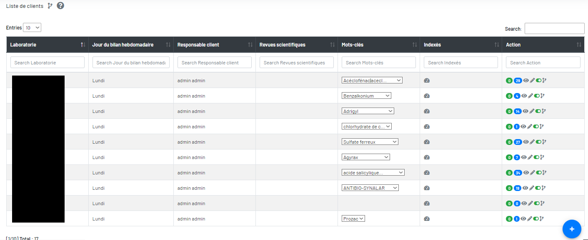
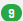

Clients
« Clients » affiche tous les clients, ses jours du bilan hebdomadaire, ses responsables client de UM, ses revues scientifiques et ses mots-clés associées, Les résultats des mots-clés retrouvés. Vous pouvez ajouter, modifier, désactiver, activer, visualiser des clients, ses mots-clés, ses rapports. Vous pouvez visualiser les détails d’extraction de texte avec les mots-clés trouvés.

 Ajoutez un client.
Ajoutez un client. mots-clès indexation dasboards.
mots-clès indexation dasboards.-  Nombre de revues d'un client.
- Nombre de mots-clès d'un client.
 Modifiez d'un client.
Modifiez d'un client. Désactivez ou activez un client.
Désactivez ou activez un client. Historique des modifications d'un client.
Historique des modifications d'un client.